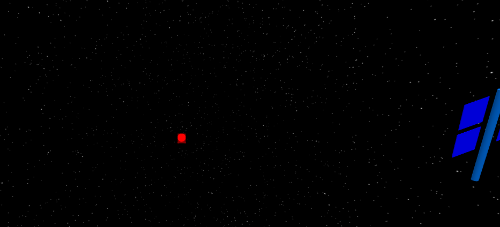
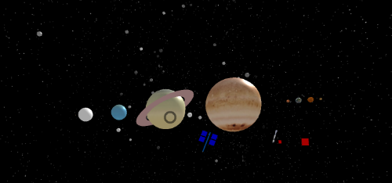

For the virtual reality assignment, we created an outer space experience to get an up close and personal view of the planets (including Pluto). In this version of the solar system, the planets are stationary, except the spinning on their axis, and there is no sun. In this version of outer space, there are twenty-five asteroids floating around and in the vincity of the planets as well as two satellites. This solar system is neither fully accurate nor to scale. The relative sizes of the planets are to scale (roughly) and their ordering is accurate, but the distance between the planets is not. The satellites and asteroids are also much larger than reality, considering the sizes of the planets, but the larger appearance lets the user see them more easily. One of the satellites is a 3D model taken from Google Sketchup and the other satellite is a composite object created using aframe-p5. The asteroids and the satellites move randomly around the space. In the world we created, there are three red boxes. If the user clicks on one of the boxes they will be moved forward to that box's position and hear a clip of the Star Wars theme song as they are moved. Although the user can click/tap on the screen to move forward, the planets are still relatively large and the only way to see the whole of the objects in the world in one view is to move farther away. Hence, the purpose of the red boxes is to let the user take in the world as a whole before exploring it. Clicking on Earth will play a longer version of the Star Wars theme song and clicking on Jupiter will cause it to change colors. In the images below, the first one shows one of the red boxes and part of the composite satellite. The second image shows the view of the world from the farthest red box.
 To experience this virtual outer space, click here!
Brought to you by Team G.O.A.T.